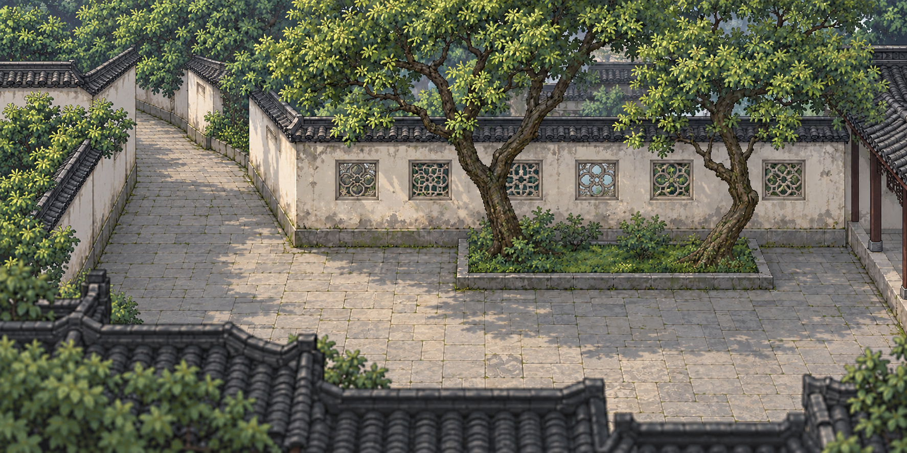
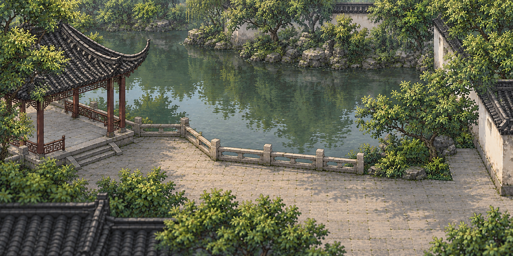

留园章 · 分幕画风校准
本轮 · 小庭同镜头、同角色比较
两侧使用正式小庭的镜头、书生精灵、鞋底位置和 126px 显示身高。切换五个真实行走位置，检查路面、窗高、树根和前景屋檐；候选尚待审查，正式场景与编辑器草稿保留当前图。
载入两张底图……
研究对照，不是章节试玩。第一、二节的旧右图将书生烘焙在画面中；第三、四节的新图虽无角色，仍没有与整幕几何对齐。生成门位、树石和窗格不是清末留园实景；两幕尚未达到同一像素网格，均未替换原场景或浏览器草稿。
一 · 门外至门槛

二 · 古木交柯小庭


三 · 粉墙黛瓦、烟雨江南的同批研究
这两张没有烘焙角色，转为冷白墙、黛瓦、灰石、克制深绿与柔和天光。它们只是相邻镜头的美术方向候选；入口只是一处门墙，不等于整条夹弄，小庭六窗纹样与树位也没有原位和清末证据。图面仍有细碎纹理，尚未确定共同逻辑像素网格。
独立试走门墙裁片 · 在统一编辑器校准本幕。二者不接 CH3 正式入口，旧草稿保持独立。
四 · 入口镜头重构（未接游戏）
在旧俯视拓扑上补墙面厚度仍读作平面图，所以另做了斜俯视的无角色像素候选。它解决了门墙、檐口与行走地面同屏的镜头问题，却没有对齐旧入口的 11 段脚点，也没有可靠的清末门位、树位或铺地原位；不能直接替换试玩底图。

这张新图已有独立的脚点试走与统一编辑器轮廓；仍不接 CH3 旗标，不能与旧入口世界坐标混用。
四补 · 整张入口换画的路线校验（拒稿）
红线是正式章流从门外经前厅、两处转角到小庭口的脚点中心线，两图使用同一 1008×688 世界坐标。新图虽有更好的墙檐立面和克制色温，但它重排了通道、庭院及池岸：红线在西折和北段没有连续可见的铺地。因此它是失败的美术候选，不可替换正式底图，不进入统一编辑器，也不改旧草稿。下一稿应先用确定的地面／Tile 图做不可挪动的下层，再逐物件叠加墙面、门檐和植物；每层对齐脚点与落地深度，不再要求一张生成图同时负责拓扑和艺术。

2026-10-12 在正式 1008×688 SVG 的门外和第二天井东侧补代码原生瓦檐、墙厚、格窗与柱脚：不改人物、Tile、交互点和转场；保留 x=496…544 的小门走线与西折石路，新增立面不跨脚下道路。原先两处重复菱形「花街」没有入口具体部位图版，已撤回为不指认纹样的石板；留园别处花街图版不能直接挪来。这只是南段与转角的局部制作，不采用右侧整图候选，不把侧翼或窗式称作 1890 年实景。可在入口独立试玩和统一编辑器对位；旧草稿需人工重新审遮挡。
五 · 绿荫轩临池的像素化对照
在同一张旧可走图上定向改为克制的像素块面，保留轩廊、栏杆、水岸和东侧干路的构图。新图是美术研究，不证明这些构件在 1890 年的位置；栏脚和岸线还须在编辑器逐点对位。旧图与新图的独立草稿互不覆盖。


可用新图独立试走和统一编辑器校轮廓；正式绿荫轩页面仍用旧图。
六 · 临池岸线艺术方向待审（不进入游戏）
玩家指出上面的像素稿仍偏细密、树种单一，后续候选又出现黄石感过重、岸线过于规整，以及竹丛过高的问题。下列两张只比较植物层次和驳岸节奏；它们的镜头与世界坐标不同于现有可走图，没有碰撞、遮挡或章节接入，也不是已确认的艺术风格。确认画风后才会另行固定可复用提示词。更早的规整岸线候选仍保留供对照。


来源、生成过程与未核项见候选记录。现有正式临池图、编辑器 ID 和浏览器草稿均未变更。
角色比例与鞋底脚点校准台
用游戏真实书生精灵叠在两张研究图上；拖动画面放置鞋底、调可见身高。这里不读取或保存游戏/编辑器草稿，也不改变正式人物比例。
全作统一约束见场景美术与表达标准；铺地不能统一刷灰石板，见留园铺地向量资料与核位清单。